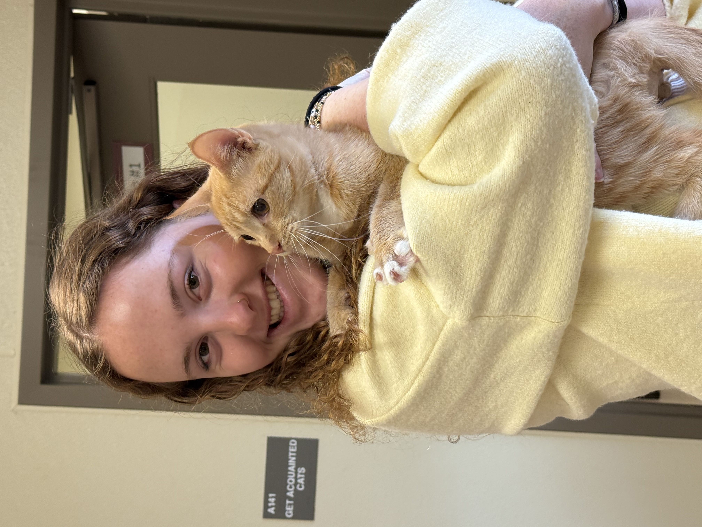
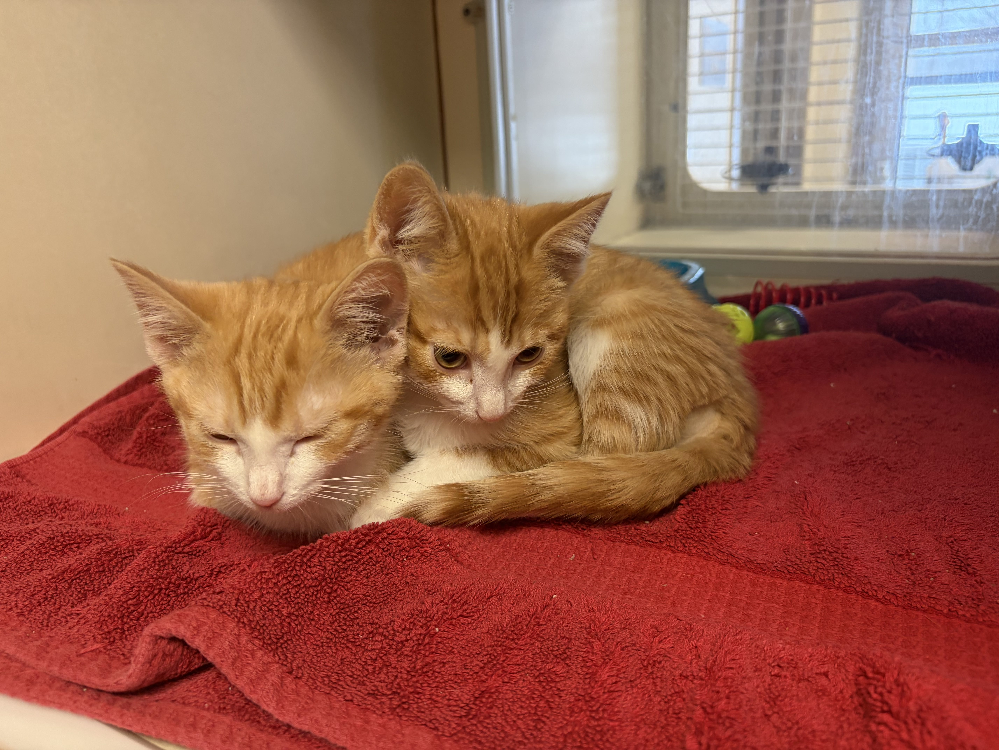
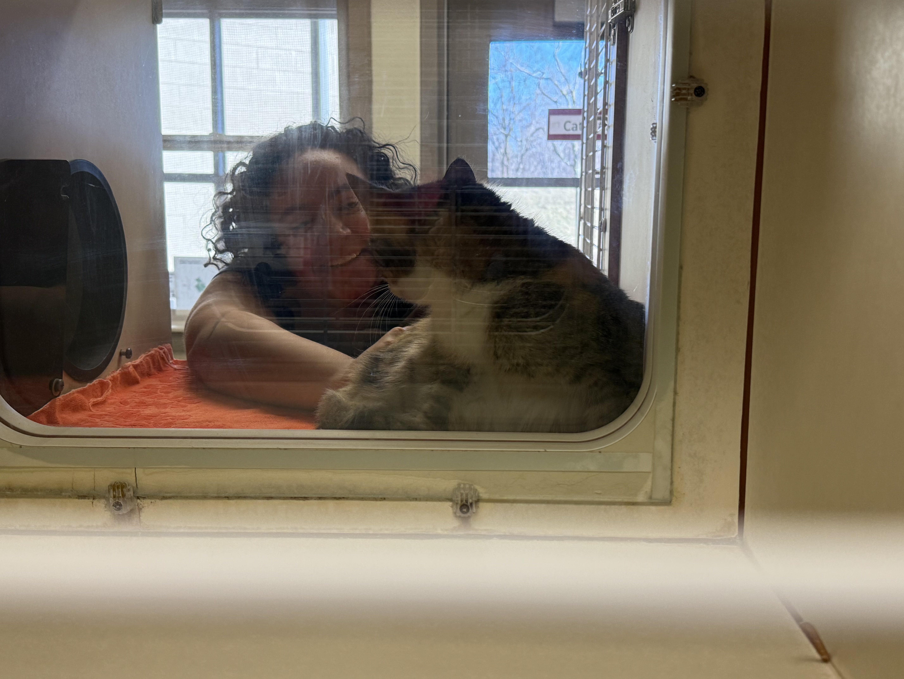
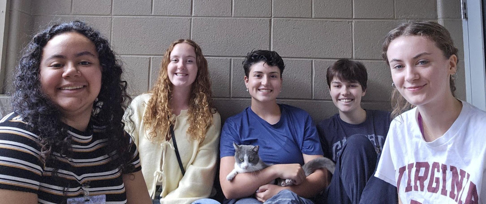

Welcome to the Cat Foster Care Guide
Planning to Foster a Cat?
Planning to foster a cat? Well congratulations! You are about to embark on an amazing adventure with an amazing animal. You're giving sick cats a chance to heal, and kittens a chance to grow, until they find their forever homes.
While fostering can be a fun and rewarding experience, you are also helping an animal in need in a vulnerable period of its life. There are a lot of factors in cat fostering to consider, and there can be difficulties if you're unprepared for the experience.
Fortunately, this guide is here to help!
Who We Are
We're a group of undergraduate students in Virginia, who go to our local animal shelter together every week. Some of us have experience fostering, most of us have experience owning a cat, but all of us spend time volunteering with cats, and have been trained by the shelter on how to care for our feline friends.
We are:
- Nat Kees
- Ana Portillo
- Aine O'Reilly
- Kayla Combs
- Amanda Harrington
And here are some actual pictures of us, hanging with the sweethearts like Peep, McGee and Gibbs, Autumn, and Luna <3:




!!!Note This guide is based off the experience and directions of the Montgomery County Animal Care and Adoption Center. However, this information and advice can be applied to other shelters outside of the NRV area.
Now that you know who we are, read on to see if you're able and qualified to foster, what to expect from your foster cat or kitten, tips and tricks, and other ways to help animals in need!